Congratulations! At this point you are not a beginner anymore. You have the appropriate background to understand a crucial aspect of EEG reading: localization. The first step is to understand what we are actually seeing on EEG.
Montages
To understand localization you first need a good understanding of EEG montages.
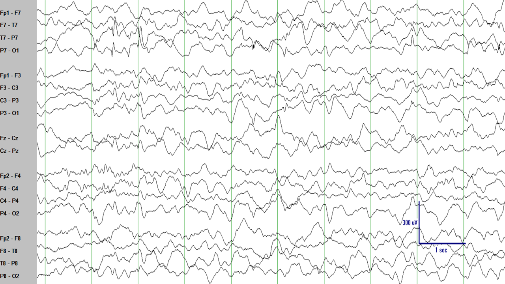
Here is a segment of EEG. Let's see what we are seeing.
The EEG measures voltage. In particular, the EEG measures the difference in voltage between two electrodes.
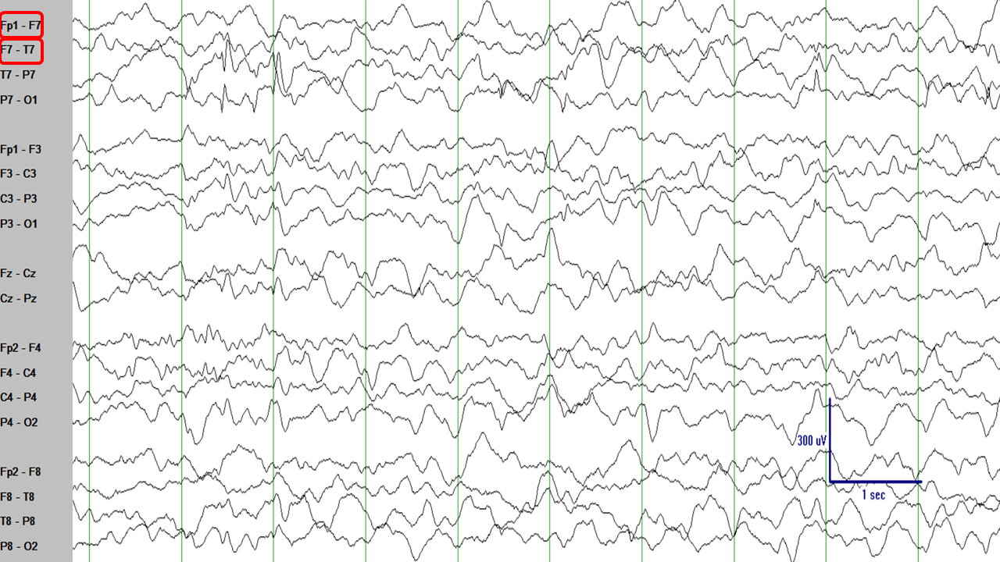
Bipolar montages (like this anterior-posterior bipolar montage) compare one electrode to the next electrode in the chain. For example, Fp1 is compared with F7 to measure the voltage Fp1-F7; F7 is compared with T7 to calculate the voltage F7-T7, and so on.
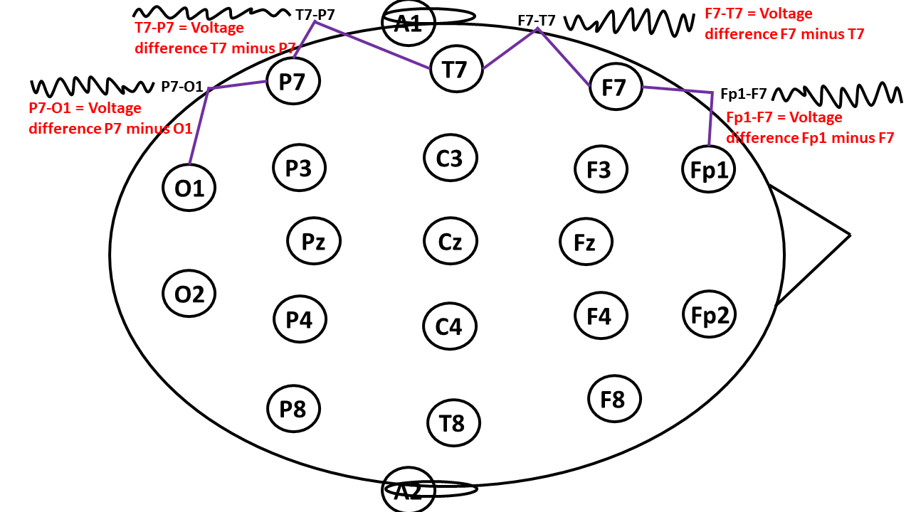
This just means that the channel Fp1-F7 is just the voltage difference of Fp1 minus F7; the channel F7-T7 is just the voltage difference of F7 minus T7 and so on.
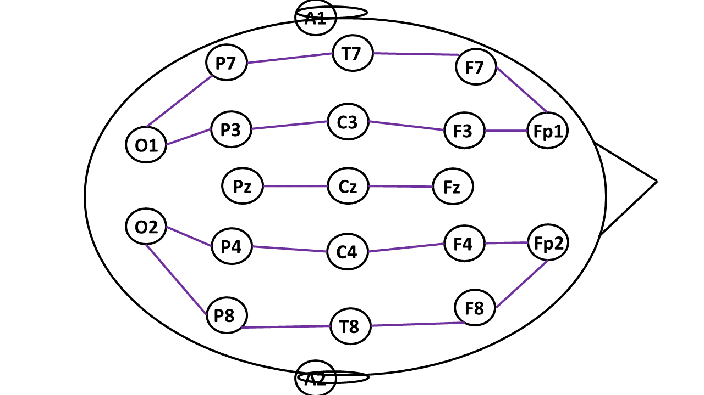
As an aside, in an anterior-posterior bipolar montage, each electrode is compared with the electrode behind it (except, O1, Pz, and O2, which are end-of-chain electrodes and do not have any electrode behind them). Therefore, this montage is called...
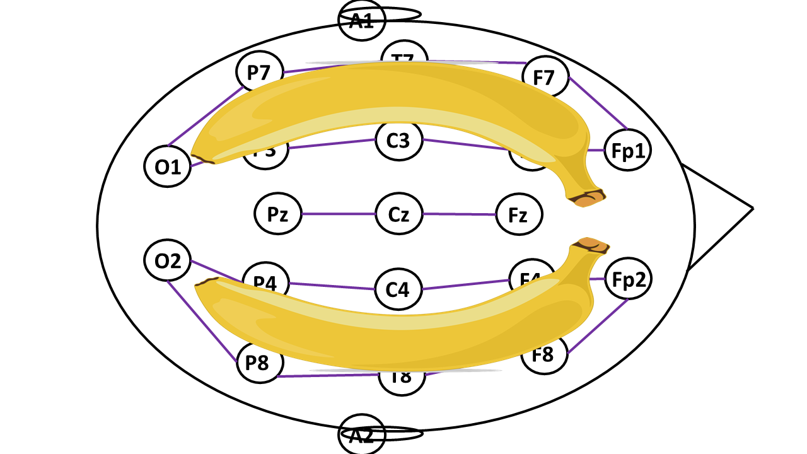
...double banana montage. Yes, epileptologists have a lot of imagination (well, ... rarely, to be completely fair).
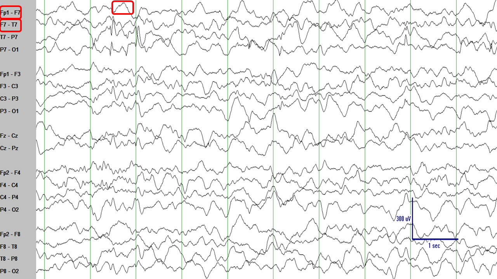
Going back to what we are reading on EEG, let's take the example of the deflection in the red rounded rectangle. It is an upgoing deflection at Fp1-F7 and this means that, at that point, Fp1 has a more negative voltage than F7.
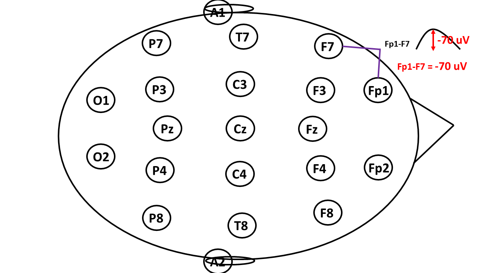
If we assume that the difference in voltage between Fp1 and F7 is -70 microvolts (Fp1 is 70 microvolts more negative than F7 at that moment), then the deflection from baseline is 70 microvolts high and the deflection is going up (because the difference is negative).
Wait...Why do negative differences go up? It is just that the first companies creating electrophysiological machines decided that negative differences would be represented as upgoing deflections (and positive differences as downgoing deflections). There is no particular reason for it and it is not particularly intuitive, but it is too late to change it (and also, making it the other way around would also be as arbitrary as it is now). The first electrophysiological machine makers arbitrarily decided this convention for us.
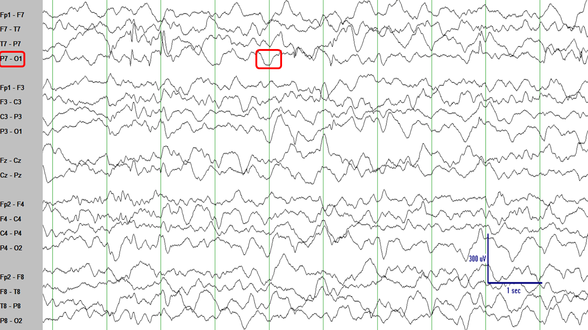
This deflection in the red rectangle goes down, which means that at the moment captured within the red rectangle, P7 is less negative (or more positive) than O1. Or O1 is more negative than P7 (if that is more intuitive). Remember that voltage is always a difference between points, not an absolute value at any point.
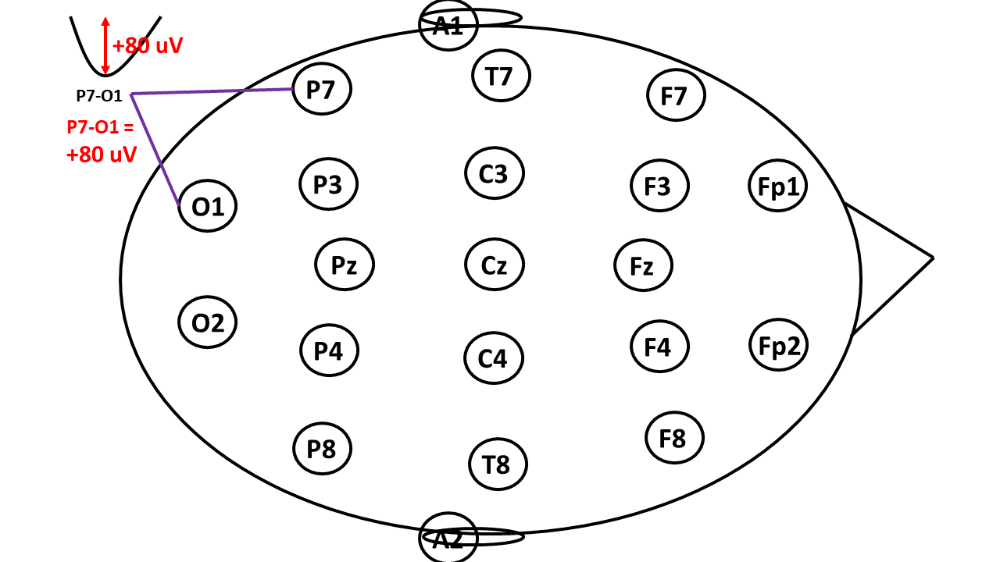
If we assume that the difference in voltage between P7 and O1 is +80 microvolts (P7 is 80 microvolts more positive than O1 at that moment), then the deflection from baseline is 80 microvolts high and the deflection is going down.
Bipolar montages do not have to be in an anterior-posterior direction. For example, transverse montages compare one electrode to the one lateral to it.
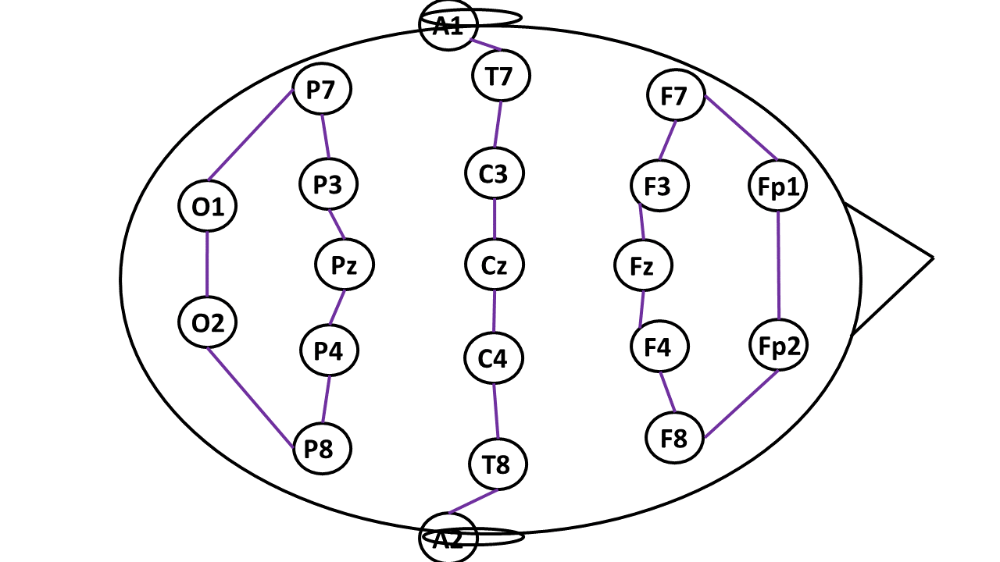
In this bipolar transverse montage electrodes are compared with electrodes to their right (except the rightmost electrodes, which are end of chain electrodes and do not have any electrode to their right). For example, F7 is compared to Fp1, Fp1 is compared to Fp2, and so on.
Different montages complement each other because the electrodes which are end-of-chain in one bipolar montage are typically not end-of-chain in another bipolar montage. For example, transverse bipolar montages are particularly helpful to look for phase reversals in electrodes which are end-of-chain in anterior-posterior bipolar montages. Transverse bipolar montages are also typically used during sleep, because they nicely show the symmetry of vertex waves, sleep spindles, and other sleep elements.
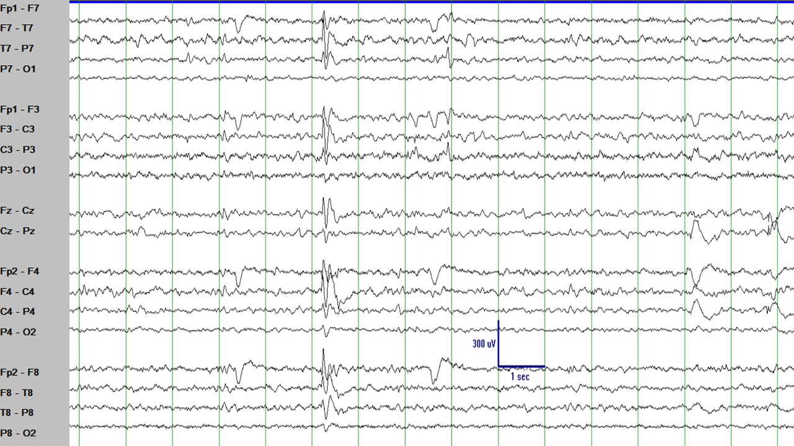
In this bipolar anterior-posterior montage, there is a spike-wave complex which appears bifrontal, but of higher amplitude in the right frontal region than in the left frontal region.
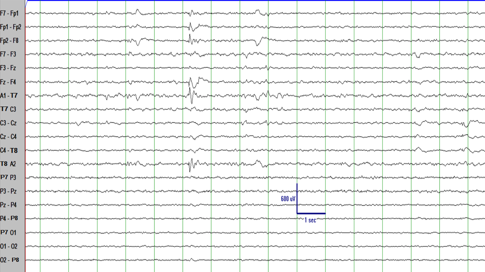
Seeing the same discharge in a transverse bipolar montage shows that the phase reversal is at Fp2.
Another bipolar montage is the circumferential montage, in which electrodes are compared to the next electrode forming a circle. The circumferential bipolar montage, as other bipolar montages allow a different perspective when comparing electrodes.
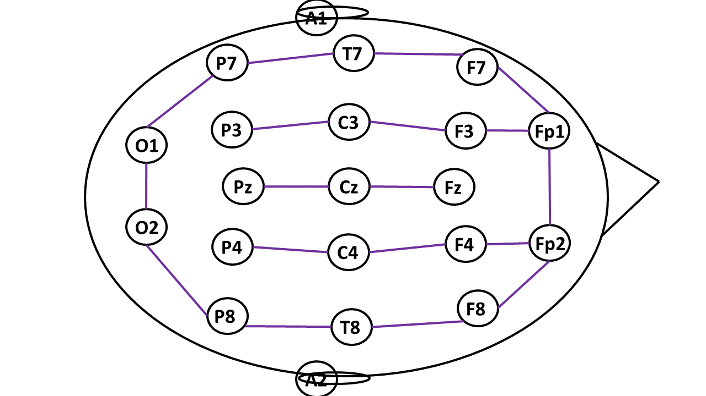
The comparisons of Fp1 to F7, F7 to T7, etc. form a circle.
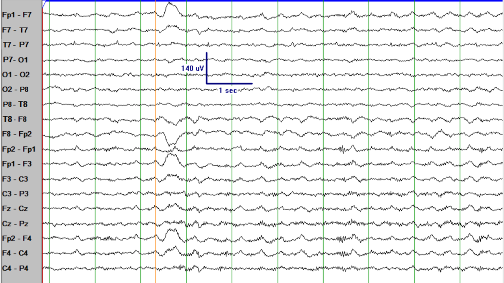
Circumferential montage as shown in the prior figure.
And what is that referential thing? A referential montage is based on the idea of using some electrode (or group of electrodes) that is (are) "electrically inactive": there should not be major deflections in the referential electrode(s). A common reference is Cz because it is in the midline far from head muscles and where epileptiform discharges or seizures are relatively rare.
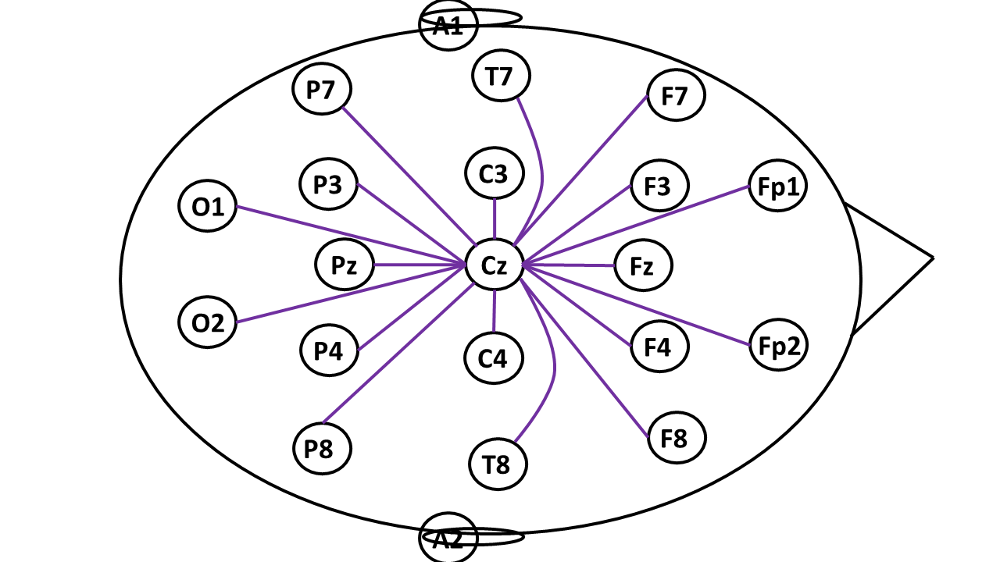
In a referential montage, all electrodes are compared to the reference, which in this case, is Cz.
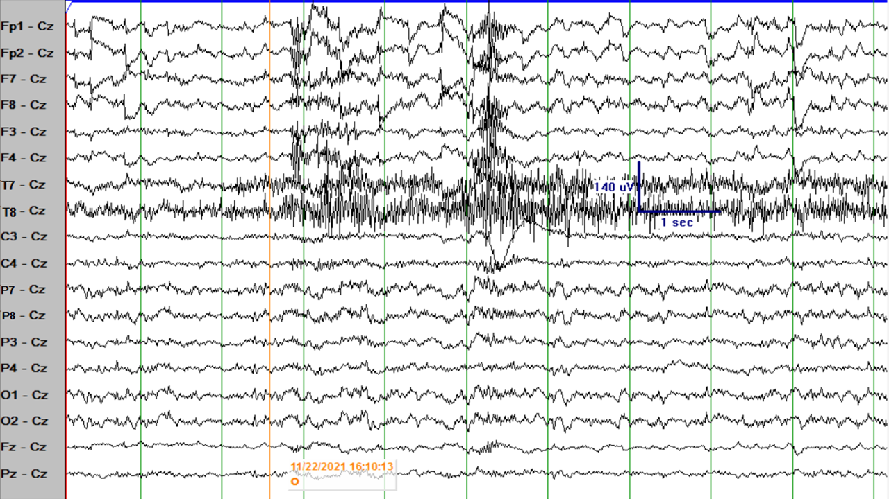
Example of a referential montage to Cz, where all electrodes are compared to Cz. It is important to realize that, if there are epileptiform discharges or seizures in the area near Cz, then Cz would not be a good reference in that case. The reference should be an electrode (or group of electrodes) that is not particularly active. The best reference varies from patient to patient and even in the same patient from situation to situation.
Where does the electricity comes from?
We learned above that EEG is just measuring a difference in voltage. However, where does this electricity come from?
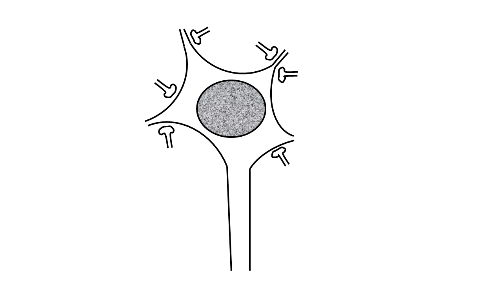
Let's imagine a cortical neuron which receives several inputs from other neurons into its dendrites and soma.
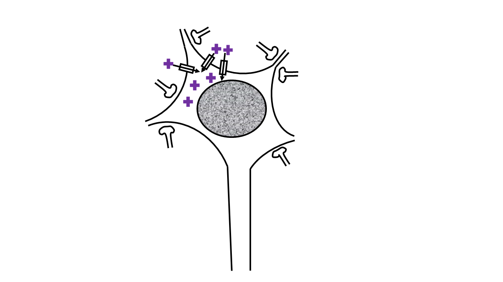
When presynaptic neurons release neurotransmitters in the synapses, these bind in postsynaptic receptors. This causes the opening of ion channels, which allows possitively charged ions (typically sodium) into the neuron: an excitatory postsynaptic potential.
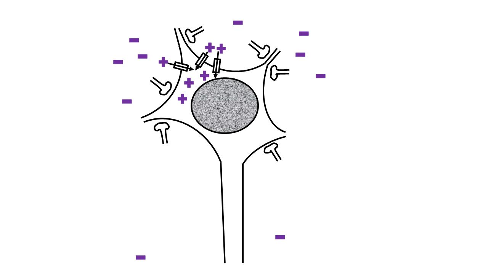
The inward flow of positive ions (typically sodium) into the neuron leaves the extracellular space around the neural soma and dendrites relatively negative. In fact, during excitatory postsynaptic potentials, the extracellular space aorund the soma and dendrites is relatively negative not only with respect to the interior of the neuron, but also with respect to the extracellular space around the axon.
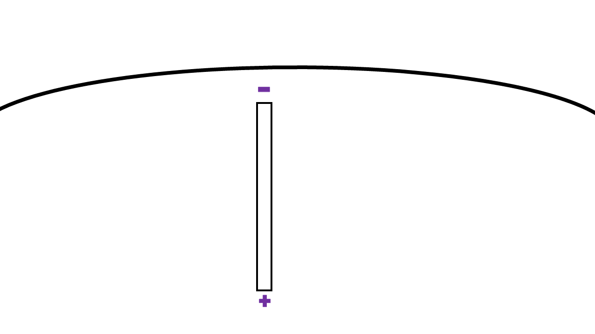
A neuron can be conceptualized (in a very symplistic form) as a vertical structure perpendicular to the surface of the brain. When there is an excitatory postsynaptic potential in the soma and dendrites, the neuron can be seen as a very small electrical dipole with a negative pole close to the brain surface and a positive pole close to the depth of the brain.
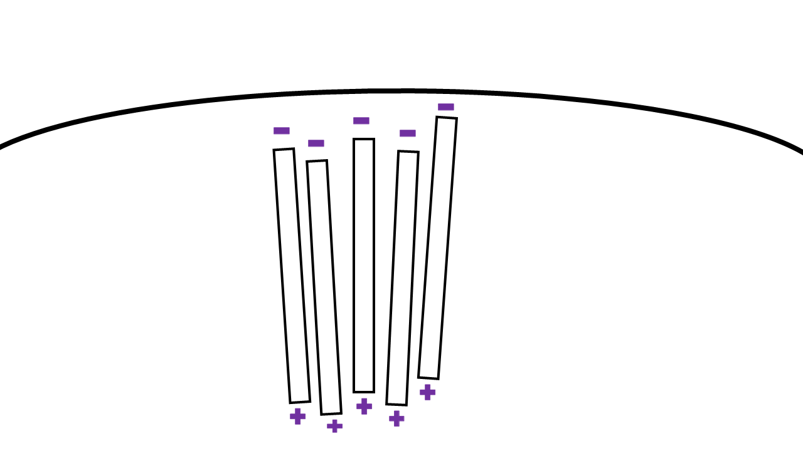
When these very small electrical dipoles add up (several thousands of neurons in the same area of the brain have excitatory postsynaptic potential at the same time)...
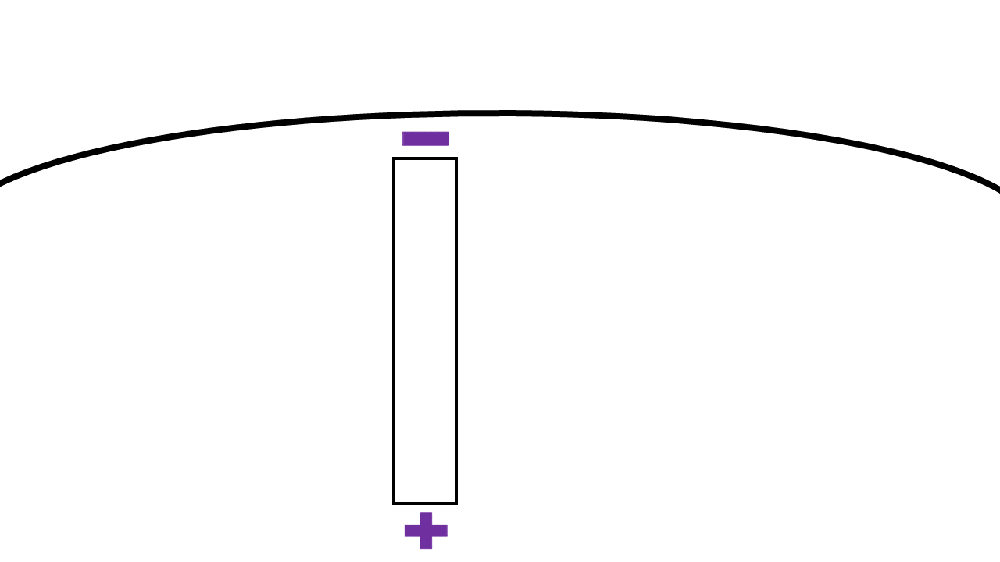
...they are equivalent to a large electrical dipole that can cause macroscopic electrical changes in the surface of the brain (still tiny, but detectable: in the order of several microvolts).
If you assume that the brain is a perfect sphere and all neurons in the cerebral cortex are only oriented perpendicular to the brain surface, then if you find a negative deflection on your scalp EEG, you can assume that the generator of that surface negativity is a dipole as shown in the figure.
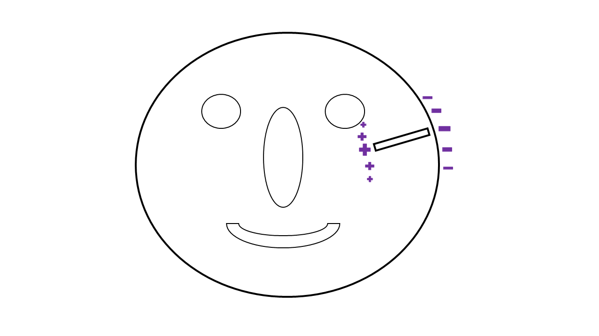
There is a gradient in the electrical field with less and less scalp negativity as you get further away from the dipole. Therefore, the electrical dipole generating the negative deflection is located just below the point of maximum negativity on the scalp. Great. This is so intuitive: maximum negativity on the scalp EEG means that the generator of that negativity is right below the maximum negativity.
Localization
Now we know what we are measuring on EEG: differences in voltage between scalp electrodes, how we are measuring it: using different EEG montages, and what it means: an underlying electrical dipole that, in many cases, is perpendicular to the surface of the scalp and roughly located below the point of maximum scalp negativity. Equipped with all that knowledge, we can now understand how to localize deflections on the EEG.
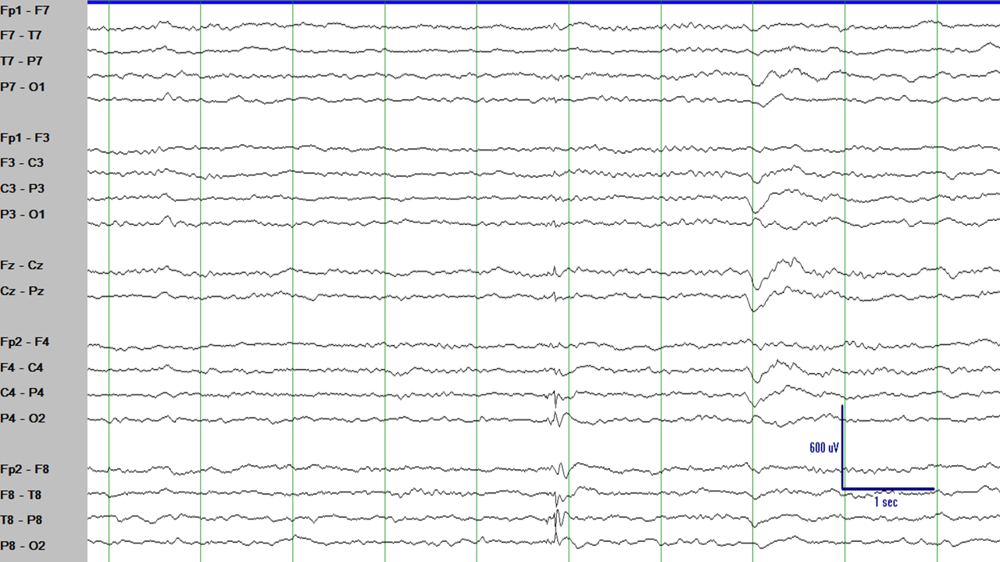
If you look at the channel P4-O2, there is an upgoing spike. As you know, this means that the voltage difference P4 minus O2 is negative (negative deflection goes up). This means that, at the moment of the spike, P4 has a more negative voltage than O2. If you look at the channel C4-P4, there is a downgoing spike. This means that the difference C4 minus P4 is positive (or said in a different way, that C4 is more positive than P4 or, equivalently, that P4 is more negative than C4).
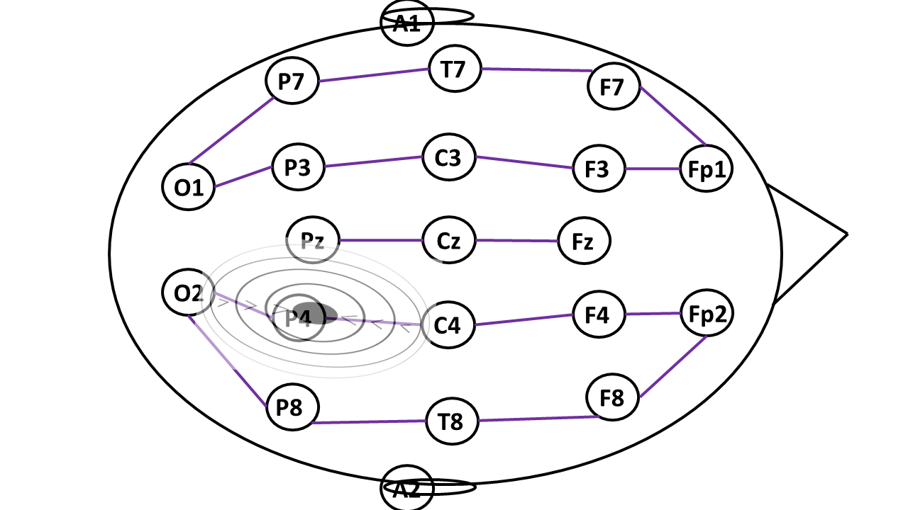
Based on that information, you can think that the spike is some kind of field that, in the anterior-posterior direction, has maximum negativity at P4 and that negativity progressively becomes less pronounced both towards C4 and towards O2.
If you look at the channel P8-O2, there is an upgoing spike. As you know, this means that the voltage difference P8 minus O2 is negative (negative deflection goes up). This means that, at the moment of the spike, P8 has a more negative voltage than O2. If you look at the channel T8-P8, there is a downgoing spike. This means that the difference T8 minus P8 is positive (or said in a different way, that T8 is more positive than P8 or, equivalently, that P8 is more negative than T8). Following the same logic, T8 is more negative than F8. In a bipolar montage, the point where a spike points to each other is called a "phase reversal" and it is the point of maximum negativity (T8 is the phase reversal in the F8-T8-P8 chain).
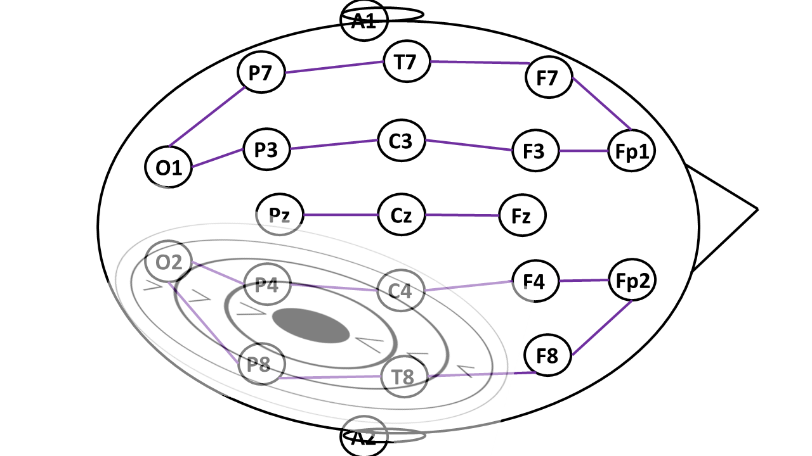
This additional information allows us to localize better. There is some kind of field that, in the anterior-posterior direction, has maximum negativity at P4 and P8 and that negativity progressively becomes less pronounced both towards C4 and towards O2 and also towards T8 and F8 and towards O2. Something like the field in the image above.
Once you localized the spike in the anterior-posterior direction with the anterior-posterior bipolar montage, you might want to localize in the transverse direction with the transverse bipolar montage. This is the same EEG segment on transverse bipolar montage. If you look at the channel P4-P8, there is an upgoing spike. This means that the voltage difference P4 minus P8 is negative (negative deflection goes up). This means that, at the moment of the spike, P4 has a more negative voltage than P8. If you look at the channel Pz-P4, there is a downgoing spike. This means that the difference Pz minus P4 is positive (or said in a different way, that Pz is more positive than P4 or, equivalently, that P4 is more negative than Pz).
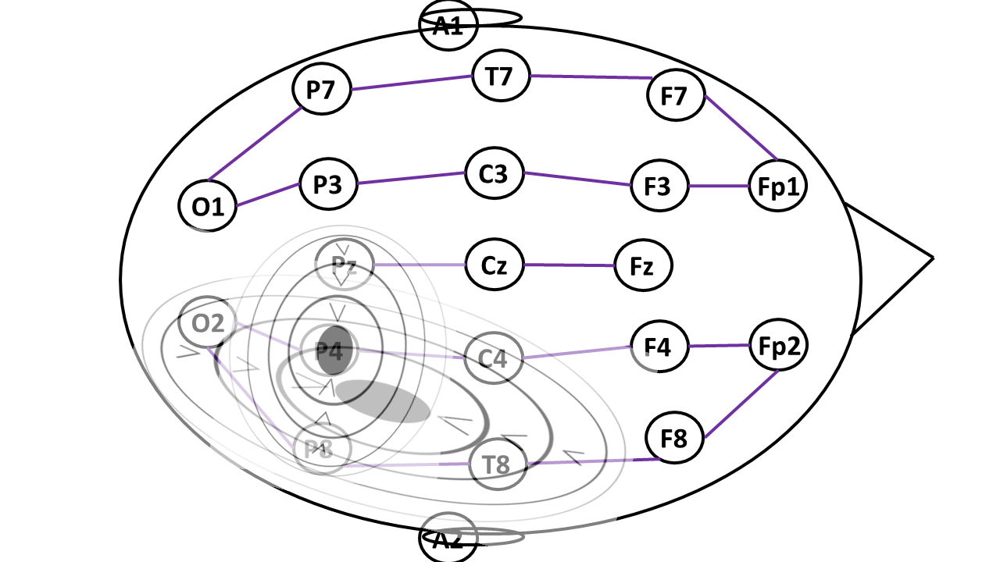
This additional information allows us to localize better in the transverse direction. There is some kind of field that, in the transverse direction, has maximum negativity at P4 and that negativity progressively becomes less pronounced both towards Pz and towards P8.
If you look at the channel T8-A2, there is an upgoing spike. As you know, this means that the voltage difference T8 minus A2 is negative (negative deflection goes up). This means that, at the moment of the spike, T8 has a more negative voltage than A2. If you look at the channel C4-T8, there is a downgoing spike. This means that the difference C4 minus T8 is positive (or said in a different way, that C4 is more positive than T8 or, equivalently, that T8 is more negative than C4).
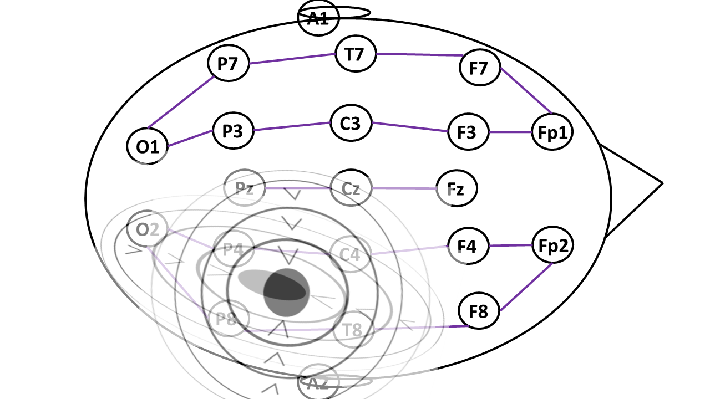
This additional information allows us to localize better in the transverse direction. There is some kind of field that, in the transverse direction, has maximum negativity at P4 and T8 and that negativity progressively becomes less pronounced both towards Pz and towards P8 and also towards C4 and A2. Something like in the figure above.
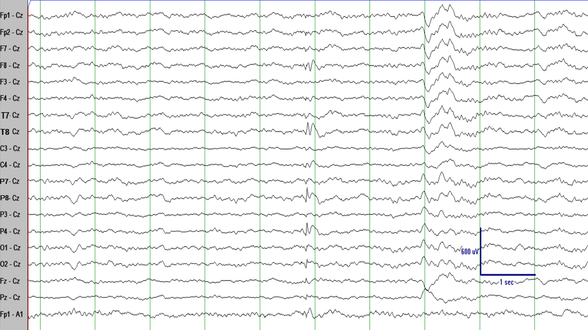
In a referential montage (like the referential montage with a Cz reference above), the point of maximum negativity on scalp EEG is marked by the deflections with highest amplitude (voltage) on EEG. You can see that the point of maximum voltage during the spike is at T8, P8, and (to a lesser extent) P4. This is consistent with the cartoon field we estimated.
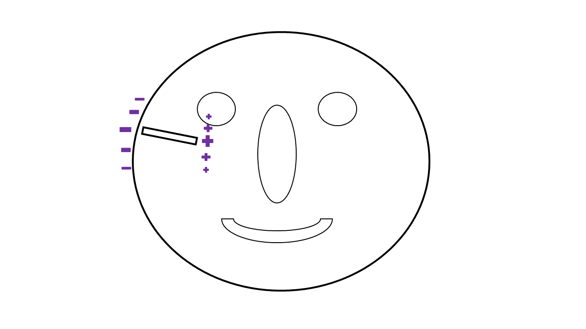
If you assume perfectly spherical brains with all neurons perpendicular to the brain surface you can conclude that the generator of that spike is a dipole located somewhere between T8, P8, and P4.
What about seizures? You should localize seizures roughly the same way. Look at the deflections and estimate where the maximum negativity on scalp EEG is. Seizures are a succession of evolving deflections, so the localization varies with time. The localization of greatest interest in most seizures is the localization of the seizure onset.
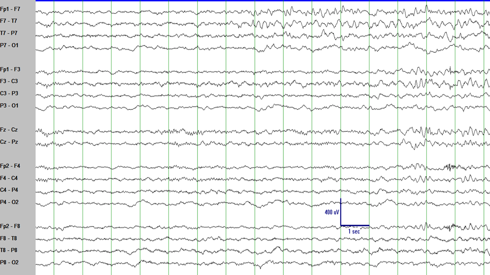
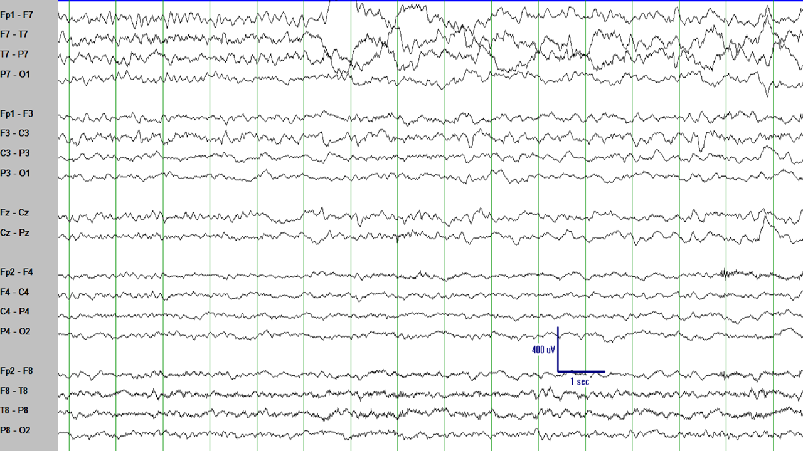
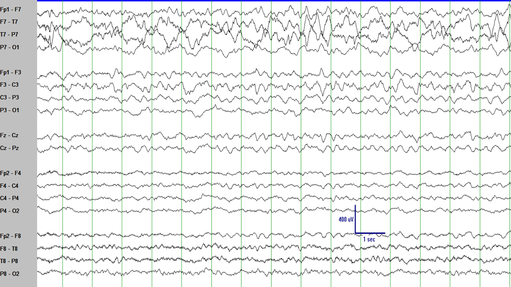
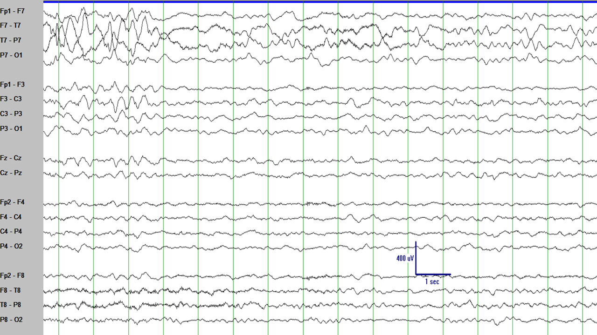
Following the deflections in the seizure you can think of a negative dipole with maximum negativity at F7/T7 that later spreads to involve F3 and even Fz. In this seizure, the maximum negativity is always in the F7/T7 region, but in other seizures the maximum negativity can migrate over time.
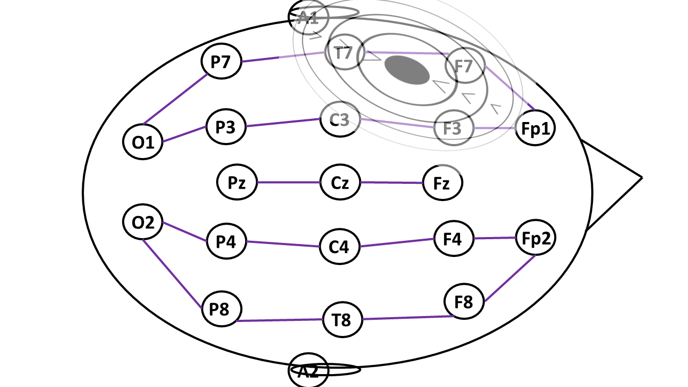
The seizure would look something like this with maximum negativity somewhere between F7, T7, and F3 with some spread and migration during the seizure.
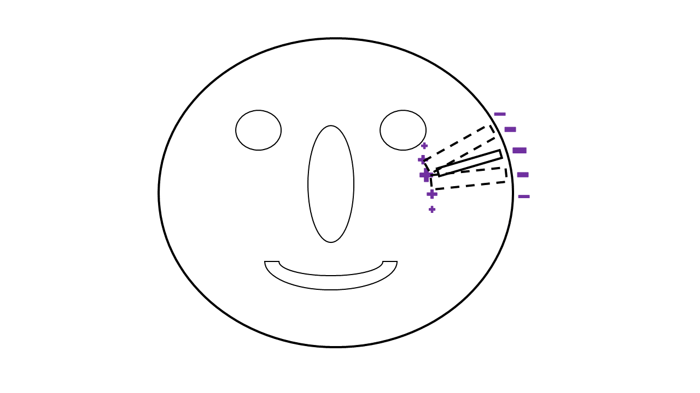
Assuming a perfectly spherical brain, the dipole would look something like in the figure above with some spread and migration during the seizure.
What about generalized seizures?
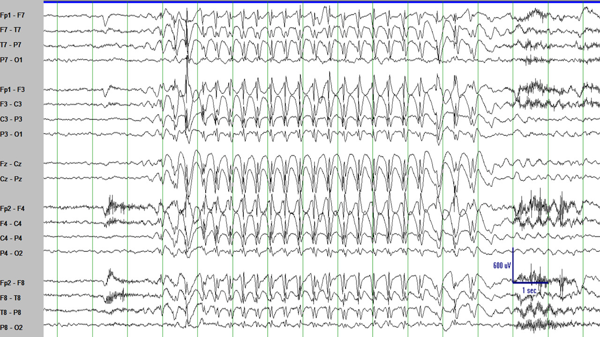
Generalized seizures have a similarly negative voltage all over the scalp because they are generated in cortico-thalamo-cortical circuits. Therefore, they typically look quite the same in all EEG channels (typically more prominent in the frontal regions, though).
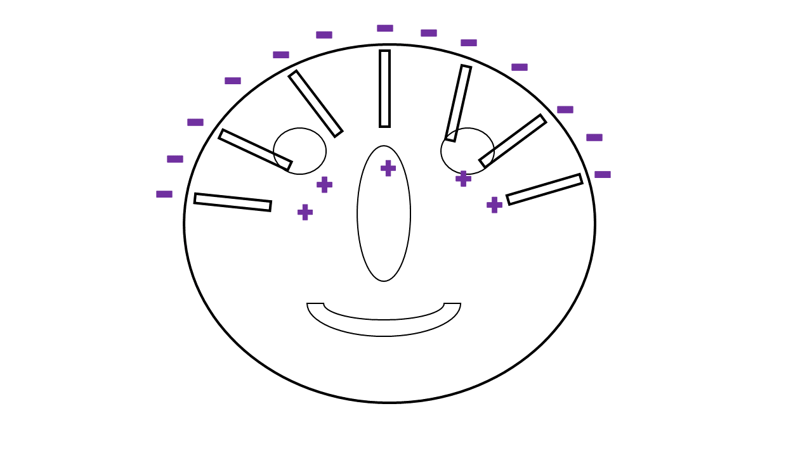
Assuming a perfectly spherical brain, the dipoles would look something like in the figure above.
SUMMARY
At this point you are ready to localize spikes, seizures, and any other deflection on EEG.
True. This is only a rough localization based on scalp EEG. The reality of localization is that it is much more complicated (brains are not perfect spheres, neurons are not always perpendicular to the scalp surface) and it requires source localization.
However, this rough localization will be extremely helpful most of the times and will make you understand better what you are seeing on EEG.
A final note: localization may appear extremely time-consuming. The reality is that it is complicated at the beginning, but it gets second nature and very fast the more you practice. Keep learning and localizing!